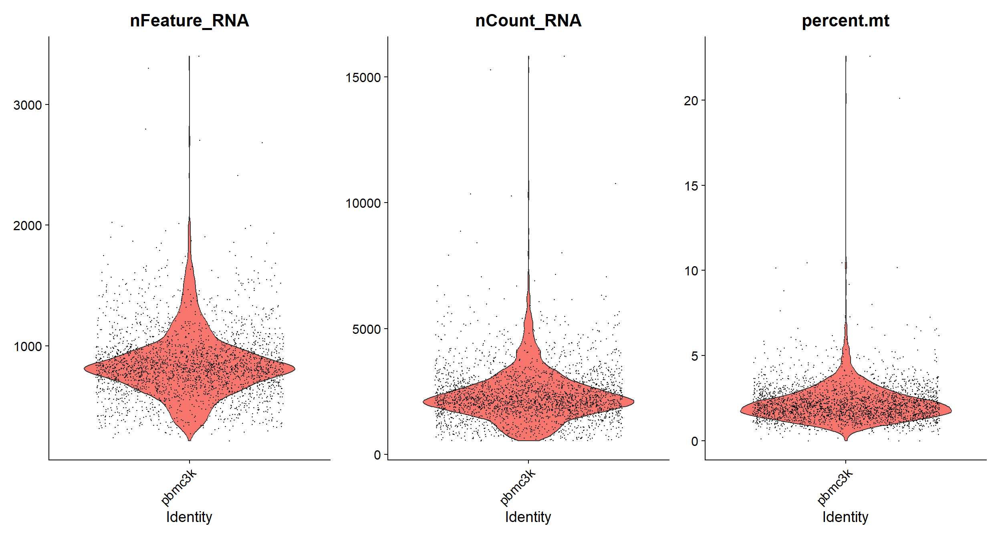
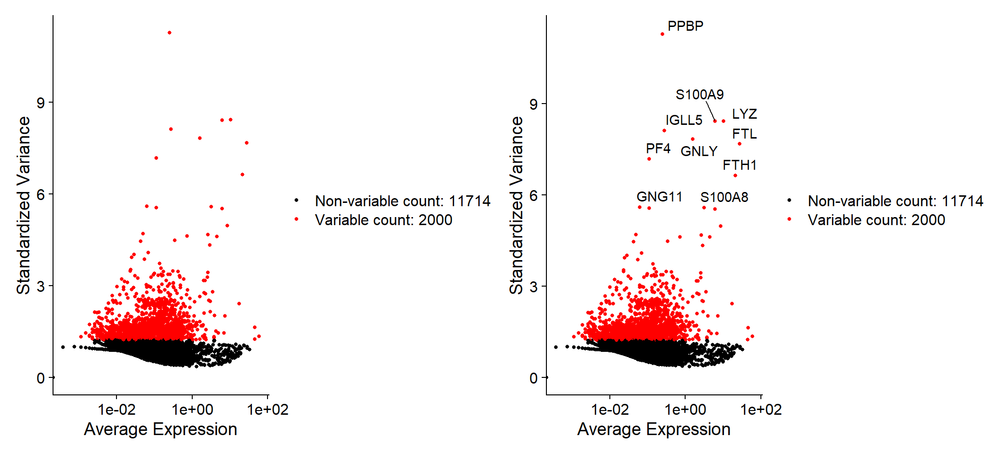
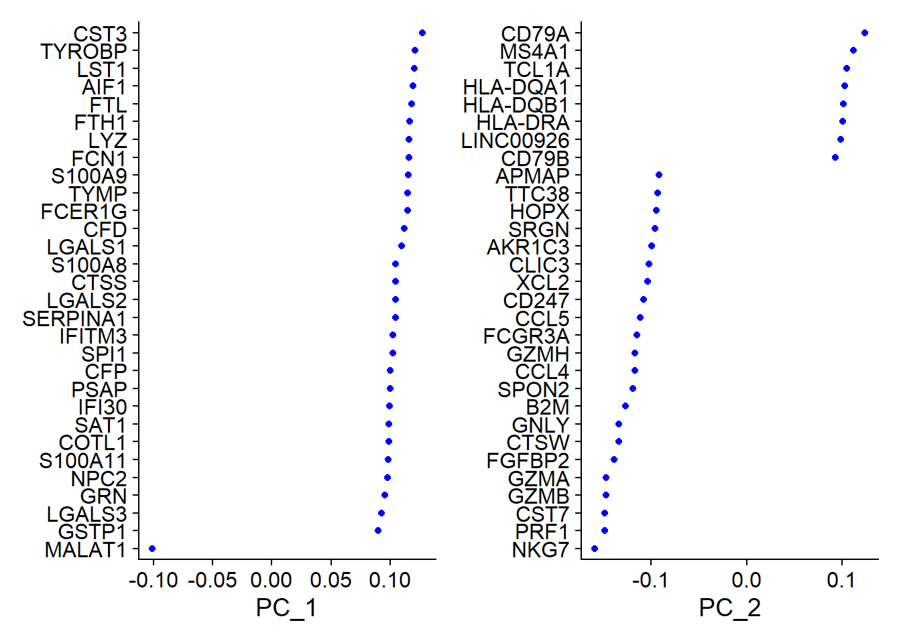
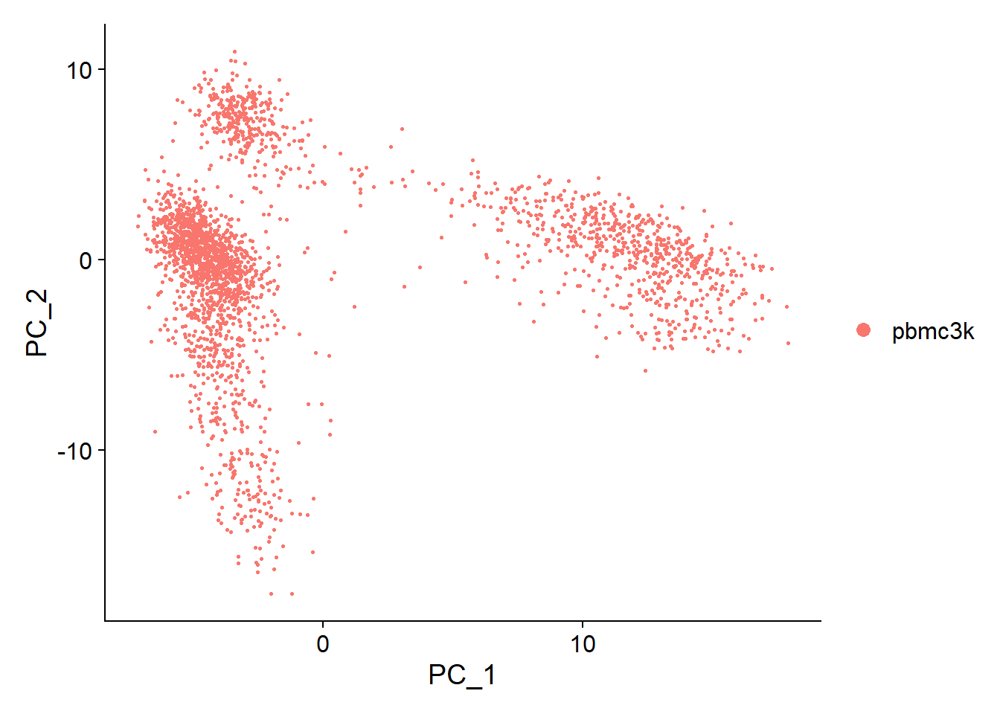
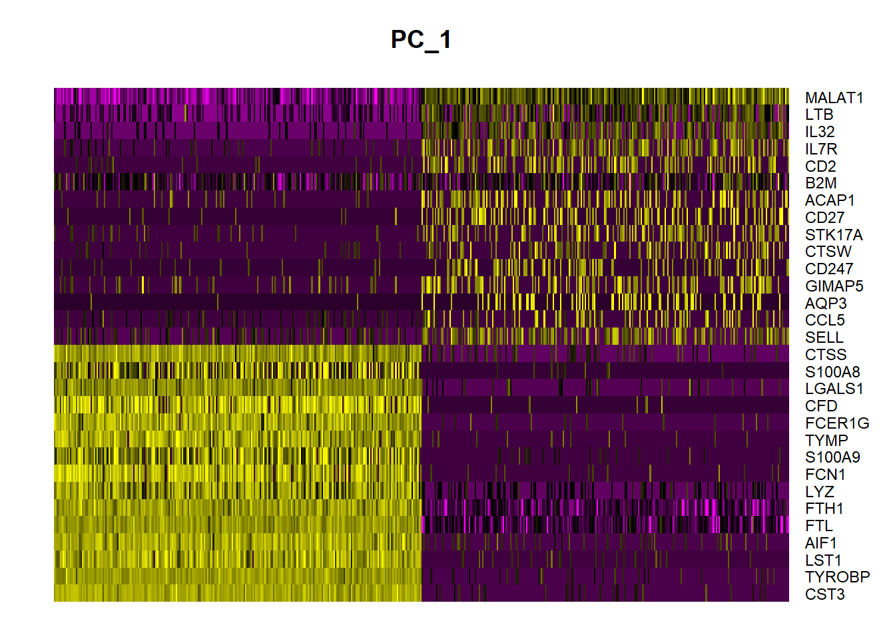
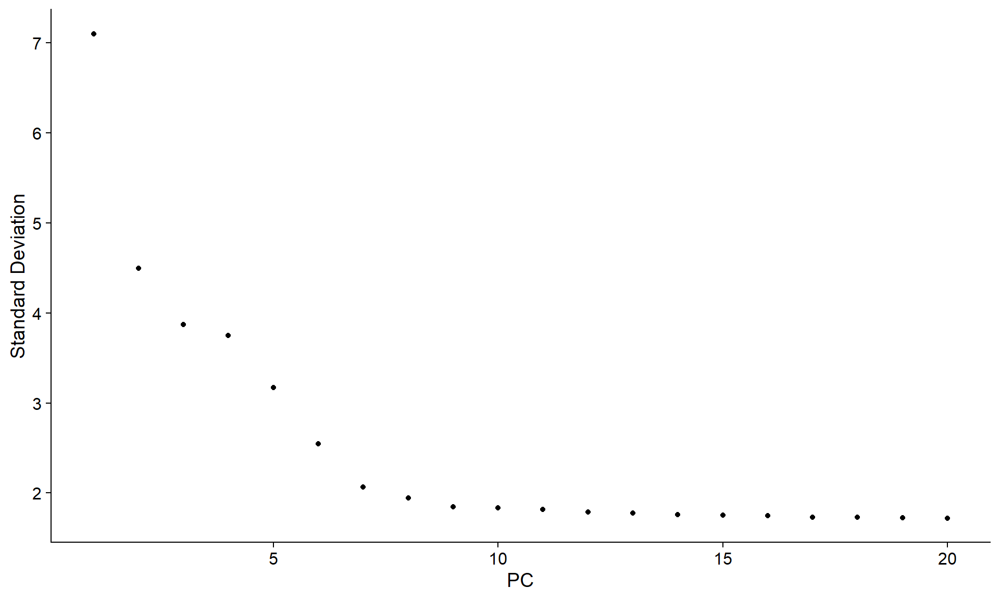
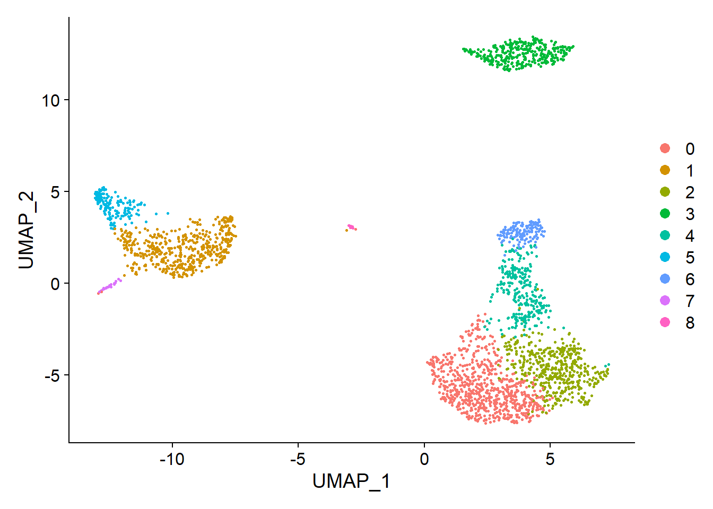
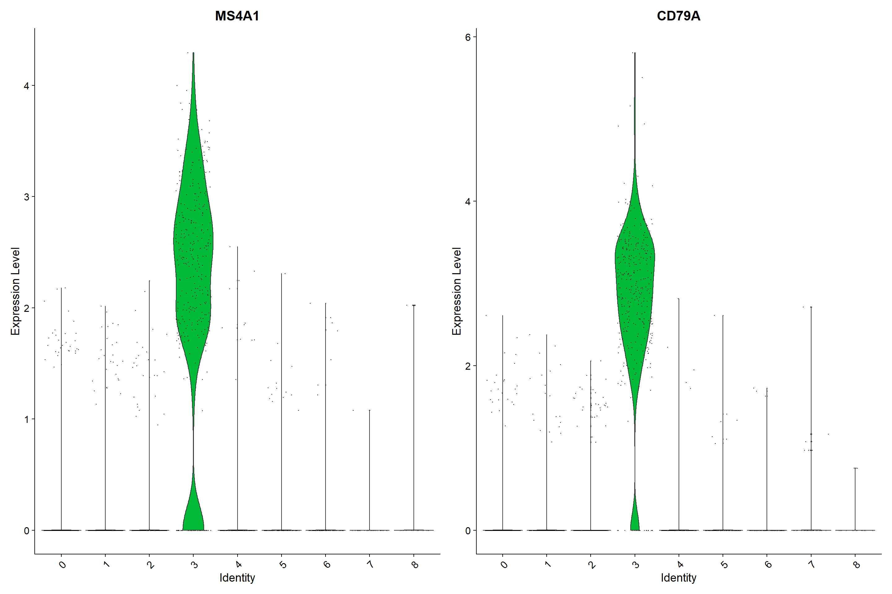
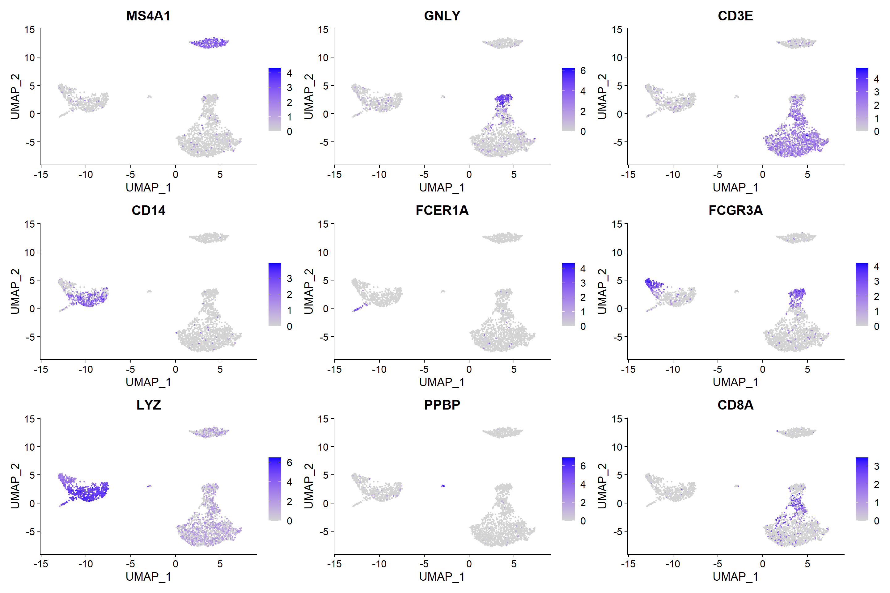
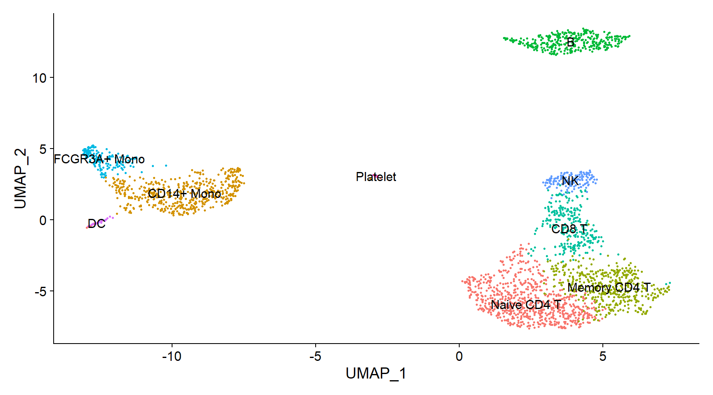

library(dplyr)
library(Seurat)
library(patchwork)32 Single-cell analysis with Seurat
Seurat is an R package designed for QC, analysis, and exploration of single-cell RNA-seq data. Seurat can be used to identify and interpret sources of heterogeneity from single-cell transcriptomic measurements, and to integrate diverse types of single-cell data.
Seurat is developed and maintained by the Satija lab and is released under the MIT license.
Relevant literature (cite when using in published research):
- Hao et al., Cell 2021 [Seurat V4]
- Stuart et al., Cell 2019 [Seurat V3]
- Butler et al., Nat Biotechnol 2018 [Seurat V2]
- Satija et al., Nat Biotechnol 2015 [Seurat V1]
We start by loading all required packages.
32.1 Reading single-cell data (Seurat Object)
For this tutorial, we will be analyzing the a dataset of Peripheral Blood Mononuclear Cells (PBMC) freely available from 10X Genomics. There are 2,700 single cells that were sequenced on the Illumina NextSeq 500. The raw data can be found here.
We start by reading in the data. The Read10X() function reads in the output of the cellranger pipeline from 10X, returning a unique molecular identified (UMI) count matrix. The values in this matrix represent the number of molecules for each feature (i.e. gene; row) that are detected in each cell (column).
# This requires download and unpacking of the above link to the raw data
utils::download.file("https://cf.10xgenomics.com/samples/cell/pbmc3k/pbmc3k_filtered_gene_bc_matrices.tar.gz",
"pbmc3k_filtered_gene_bc_matrices.tar.gz")
utils::untar("pbmc3k_filtered_gene_bc_matrices.tar.gz")
pbmc.data <- Read10X(data.dir = "filtered_gene_bc_matrices/hg19")What does data in a count matrix look like?
# Lets examine a few genes in the first thirty cells
dim(pbmc.data)[1] 32738 2700pbmc.data[c("CD3D", "TCL1A", "MS4A1"), 1:30]3 x 30 sparse Matrix of class "dgCMatrix"
CD3D 4 . 10 . . 1 2 3 1 . . 2 7 1 . . 1 3 . 2 3 . . . . . 3 4 1 5
TCL1A . . . . . . . . 1 . . . . . . . . . . . . 1 . . . . . . . .
MS4A1 . 6 . . . . . . 1 1 1 . . . . . . . . . 36 1 2 . . 2 . . . .The . values in the matrix represent 0s (no molecules detected). Since most values in an scRNA-seq matrix are 0, Seurat uses a sparse-matrix representation whenever possible. This results in significant memory and speed savings for scRNA-seq data.
dense.size <- object.size(as.matrix(pbmc.data))
format(dense.size, unit = "Mb")[1] "676.7 Mb"sparse.size <- object.size(pbmc.data)
format(sparse.size, unit = "Mb")[1] "28.5 Mb"as.numeric(dense.size)/as.numeric(sparse.size)[1] 23.72804
We next use the count matrix to create a Seurat object. The object serves as a container that contains both data (like the count matrix) and analysis (like PCA, or clustering results) for a single-cell dataset. For a technical discussion of the Seurat object structure, check out our GitHub Wiki. For example, the count matrix is stored in pbmc[["RNA"]]@counts.
# Initialize the Seurat object with the raw (non-normalized data).
pbmc <- CreateSeuratObject(counts = pbmc.data, project = "pbmc3k", min.cells = 3, min.features = 200)
pbmcAn object of class Seurat
13714 features across 2700 samples within 1 assay
Active assay: RNA (13714 features, 0 variable features)Exercise:
Change the min.cells and min.features argument to include features detected in at least 1% of the cells, and cells where at least 1% of the features are expressed.
Challenge:
Apply an expression threshold of 2 UMI for a feature to be called detected / expressed. Proceed with filtering out features not detected in at least 1% of the cells, and cells where not at least 1% of the features are expressed. Note: this will require to apply the filtering on the actual count matrix itself prior to creating the Seurat object.
32.2 Standard pre-processing workflow
The steps below encompass the standard pre-processing workflow for scRNA-seq data in Seurat. These represent the selection and filtration of cells based on QC metrics, data normalization and scaling, and the detection of highly variable features.
32.2.1 QC and selecting cells for further analysis
Seurat allows you to easily explore QC metrics and filter cells based on any user-defined criteria. A few QC metrics commonly used by the community include
- The number of unique genes detected in each cell.
- Low-quality cells or empty droplets will often have very few genes
- Cell doublets or multiplets may exhibit an aberrantly high gene count
- Similarly, the total number of molecules detected within a cell (correlates strongly with unique genes)
- The percentage of reads that map to the mitochondrial genome
- Low-quality / dying cells often exhibit extensive mitochondrial contamination
- We calculate mitochondrial QC metrics with the
PercentageFeatureSet()function, which calculates the percentage of counts originating from a set of features - We use the set of all genes starting with
MT-as a set of mitochondrial genes
# The [[ operator can add columns to object metadata. This is a great place to stash QC stats
pbmc[["percent.mt"]] <- PercentageFeatureSet(pbmc, pattern = "^MT-")
head(pbmc[["percent.mt"]]) percent.mt
AAACATACAACCAC-1 3.0177759
AAACATTGAGCTAC-1 3.7935958
AAACATTGATCAGC-1 0.8897363
AAACCGTGCTTCCG-1 1.7430845
AAACCGTGTATGCG-1 1.2244898
AAACGCACTGGTAC-1 1.6643551Where are QC metrics stored in Seurat?
The number of unique genes and total molecules are automatically calculated during
CreateSeuratObject()- You can find them stored in the object meta data
# Show QC metrics for the first 5 cells head(pbmc@meta.data, 5)orig.ident nCount_RNA nFeature_RNA percent.mt AAACATACAACCAC-1 pbmc3k 2419 779 3.0177759 AAACATTGAGCTAC-1 pbmc3k 4903 1352 3.7935958 AAACATTGATCAGC-1 pbmc3k 3147 1129 0.8897363 AAACCGTGCTTCCG-1 pbmc3k 2639 960 1.7430845 AAACCGTGTATGCG-1 pbmc3k 980 521 1.2244898
In the example below, we visualize QC metrics, and use these to filter cells.
- We filter cells that have unique feature counts over 2,500 or less than 200
- We filter cells that have >5% mitochondrial counts
# Visualize QC metrics as a violin plot
VlnPlot(pbmc, ncol = 3, features = c("nFeature_RNA", "nCount_RNA", "percent.mt"))
Exercise: As we discussed in the OSCA session, a useful diagnostic involves plotting the proportion of mitochondrial counts against some of the other QC metrics. Create a plot of library size (x-axis) against percentage of reads mapped to mitochondrial transcripts (y-axis) for each cell. Hint: use the FeatureScatter function.
Challenge: Combine this plot with another scatter plot of library size (x-axis) against the number of expressed features (y-axis) for each cell.
We then use these QC metrics to filter cells. Here,
- we filter cells that have unique feature counts over 2,500 or less than 200,
- we filter cells that have >5% mitochondrial counts.
pbmc <- subset(pbmc, subset = nFeature_RNA > 200 & nFeature_RNA < 2500 & percent.mt < 5)
pbmcAn object of class Seurat
13714 features across 2638 samples within 1 assay
Active assay: RNA (13714 features, 0 variable features)32.3 Normalizing the data
After removing unwanted cells from the dataset, the next step is to normalize the data. By default, we employ a global-scaling normalization method “LogNormalize” that normalizes the feature expression measurements for each cell by the total expression, multiplies this by a scale factor (10,000 by default), and log-transforms the result. Normalized values are stored in pbmc[["RNA"]]@data.
pbmc <- NormalizeData(pbmc, normalization.method = "LogNormalize", scale.factor = 10000)
pbmc[["RNA"]]@data[1:5, 1:5]5 x 5 sparse Matrix of class "dgCMatrix"
AAACATACAACCAC-1 AAACATTGAGCTAC-1 AAACATTGATCAGC-1
AL627309.1 . . .
AP006222.2 . . .
RP11-206L10.2 . . .
RP11-206L10.9 . . .
LINC00115 . . .
AAACCGTGCTTCCG-1 AAACCGTGTATGCG-1
AL627309.1 . .
AP006222.2 . .
RP11-206L10.2 . .
RP11-206L10.9 . .
LINC00115 . .For clarity, in this previous line of code (and in future commands), we provide the default values for certain parameters in the function call. However, this isn’t required and the same behavior can be achieved with:
pbmc <- NormalizeData(pbmc)32.4 Identification of highly variable features (feature selection)
We next calculate a subset of features that exhibit high cell-to-cell variation in the dataset (i.e, they are highly expressed in some cells, and lowly expressed in others). Focusing on these genes in downstream analysis helps to highlight biological signal in single-cell datasets.
As described in the OSCA session, the procedure applied in Seurat also involves modeling of the mean-variance relationship inherent to the single-cell dataset under investigation, and is implemented in the FindVariableFeatures() function.
By default, 2,000 features per dataset are returned and will then be used in downstream analysis, like PCA.
pbmc <- FindVariableFeatures(pbmc, selection.method = "vst", nfeatures = 2000)
# Identify the 10 most highly variable genes
top10 <- head(VariableFeatures(pbmc), 10)
# plot variable features with and without labels
plot1 <- VariableFeaturePlot(pbmc)
plot2 <- LabelPoints(plot = plot1, points = top10, repel = TRUE)
plot1 + plot2
32.5 Scaling the data
Next, we apply a linear transformation (‘scaling’) that is a standard pre-processing step prior to dimensional reduction techniques like PCA. The ScaleData() function:
- Shifts the expression of each gene, so that the mean expression across cells is 0
- Scales the expression of each gene, so that the variance across cells is 1
- This step gives equal weight in downstream analyses, so that highly-expressed genes do not dominate
- The results of this are stored in
pbmc[["RNA"]]@scale.data
pbmc <- ScaleData(pbmc, features = rownames(pbmc))
pbmc[["RNA"]]@scale.data[1:5, 1:5]This step takes too long! Can I make it faster?
Scaling is an essential step in the Seurat workflow, but only on genes that will be used as input to PCA. Therefore, the default in ScaleData() is only to perform scaling on the previously identified variable features (2,000 by default). To do this, omit the features argument in the previous function call, i.e.
pbmc <- ScaleData(pbmc)Your PCA and clustering results will be unaffected. However, Seurat heatmaps (produced as shown below with DoHeatmap()) require genes in the heatmap to be scaled, to make sure highly-expressed genes don’t dominate the heatmap. To make sure we don’t leave any genes out of the heatmap later, we are scaling all genes in this tutorial.
32.6 Perform linear dimensionality reduction
Next we perform PCA on the scaled data. By default, only the previously determined variable features are used as input, but can be defined using features argument if you wish to choose a different subset.
pbmc <- RunPCA(pbmc, features = VariableFeatures(object = pbmc))Seurat provides several useful ways of visualizing both cells and features that define the PCA, including VizDimReduction(), DimPlot(), and DimHeatmap().
# Examine and visualize PCA results a few different ways
print(pbmc[["pca"]], dims = 1:5, nfeatures = 5)PC_ 1
Positive: CST3, TYROBP, LST1, AIF1, FTL
Negative: MALAT1, LTB, IL32, IL7R, CD2
PC_ 2
Positive: CD79A, MS4A1, TCL1A, HLA-DQA1, HLA-DQB1
Negative: NKG7, PRF1, CST7, GZMB, GZMA
PC_ 3
Positive: HLA-DQA1, CD79A, CD79B, HLA-DQB1, HLA-DPB1
Negative: PPBP, PF4, SDPR, SPARC, GNG11
PC_ 4
Positive: HLA-DQA1, CD79B, CD79A, MS4A1, HLA-DQB1
Negative: VIM, IL7R, S100A6, IL32, S100A8
PC_ 5
Positive: GZMB, NKG7, S100A8, FGFBP2, GNLY
Negative: LTB, IL7R, CKB, VIM, MS4A7 VizDimLoadings(pbmc, dims = 1:2, reduction = "pca")
DimPlot(pbmc, reduction = "pca")
In particular DimHeatmap() allows for easy exploration of the primary sources of heterogeneity in a dataset, and can be useful when trying to decide which PCs to include for further downstream analyses. Both cells and features are ordered according to their PCA scores. Setting cells to a number plots the ‘extreme’ cells on both ends of the spectrum, which dramatically speeds plotting for large datasets. Though clearly a supervised analysis, we find this to be a valuable tool for exploring correlated feature sets.
DimHeatmap(pbmc, dims = 1, cells = 500, balanced = TRUE)
Exercise:
Use the DimHeatmap function to produce heatmaps for the first 15 PCs. Based on these heatmaps, which PCs would you include for further downstream analysis?
Challenge:
PC3 and PC8 look different than the other heatmaps in that they display small condensed blocks on only one side of the heatmap. How do interpret these small condensed blocks?
32.7 Determine the ‘dimensionality’ of the dataset
To overcome the extensive technical noise in any single feature for scRNA-seq data, Seurat clusters cells based on their PCA scores, with each PC essentially representing a ‘metafeature’ that combines information across a correlated feature set. The top principal components therefore represent a robust compression of the dataset. However, how many components should we choose to include? 10? 20? 100?
An heuristic method from textbook statistics generates an ‘Elbow plot’: a ranking of principle components based on the percentage of variance explained by each one (ElbowPlot() function). In this example, we can observe an ‘elbow’ around PC9-10, suggesting that the majority of true signal is captured in the first 10 PCs.
ElbowPlot(pbmc)
Determining the dimensionality of a dataset and how many PCs to retain for downstream analysis comes with some uncertainty. We chose 10 here, but we consider the following:
- Dendritic cell and NK aficionados may recognize that genes strongly associated with PCs 12 and 13 define rare immune subsets (i.e. MZB1 is a marker for plasmacytoid DCs). However, these groups are so rare, they are difficult to distinguish from background noise for a dataset of this size without prior knowledge.
- We can inspect the results from repeating downstream analyses with a different number of PCs (10, 15, or even 50!). As you will observe, the results often do not differ dramatically.
- Its is advisable to err on the higher side when choosing this parameter. For example, performing downstream analyses with only 5 PCs does significantly and adversely affect results.
32.8 Cluster the cells
As discussed for clustering cells with OSCA, Seurat also applies a graph-based clustering approach. This involves embedding the cells in a graph structure - for example a k-nearest neighbor (kNN) graph, with edges drawn between cells with similar feature expression patterns, and then partition this graph into highly interconnected ‘quasi-cliques’ or ‘communities’.
A kNN graph is first constructed based on the euclidean distance in PCA space, and the edge weights are refined between any two cells based on the shared overlap in their local neighborhoods. This step is performed using the FindNeighbors() function, and takes as input the previously defined dimensionality of the dataset (here: the first 10 PCs).
pbmc <- FindNeighbors(pbmc, dims = 1:10)To cluster the cells, we next apply modularity optimization techniques such as the Louvain algorithm to iteratively group cells together, with the goal of optimizing modularity. The FindClusters() function implements this procedure, and contains a resolution parameter that sets the ‘granularity’ of the downstream clustering, with increased values leading to a greater number of clusters.
pbmc <- FindClusters(pbmc, resolution = 0.5)Modularity Optimizer version 1.3.0 by Ludo Waltman and Nees Jan van Eck
Number of nodes: 2638
Number of edges: 95965
Running Louvain algorithm...
Maximum modularity in 10 random starts: 0.8723
Number of communities: 9
Elapsed time: 0 secondsExample settings for this parameter are between typically 0.4-1.2 for single-cell datasets of around 3K cells. Optimal resolution often increases for larger datasets. The clusters can then be found using the Idents() function.
# Look at cluster IDs of the first 5 cells
head(Idents(pbmc), 5)AAACATACAACCAC-1 AAACATTGAGCTAC-1 AAACATTGATCAGC-1 AAACCGTGCTTCCG-1
2 3 2 1
AAACCGTGTATGCG-1
6
Levels: 0 1 2 3 4 5 6 7 832.9 Run non-linear dimensional reduction (UMAP/tSNE)
Seurat offers several non-linear dimensional reduction techniques, such as tSNE and UMAP, to visualize and explore these datasets. The goal of these algorithms is to learn the underlying manifold of the data in order to place similar cells together in low-dimensional space. Cells within the graph-based clusters determined above should co-localize on these dimension reduction plots. As input to the UMAP and tSNE, we suggest using the same PCs as input to the clustering analysis.
# If you haven't installed UMAP, you can do so via reticulate::py_install(packages =
# 'umap-learn')
pbmc <- RunUMAP(pbmc, dims = 1:10)# note that you can set `label = TRUE` or use the LabelClusters function to help label
# individual clusters
DimPlot(pbmc, reduction = "umap")
32.10 Finding differentially expressed features (cluster biomarkers)
Seurat provides functions to find markers that define clusters via differential expression. By default, it identifies positive and negative markers of a single cluster (specified in ident.1), compared to all other cells. FindAllMarkers() automates this process for all clusters, but you can also test groups of clusters vs. each other, or against all cells.
# find all markers of cluster 2
cluster2.markers <- FindMarkers(pbmc, ident.1 = 2, min.pct = 0.25)
head(cluster2.markers, n = 5) p_val avg_log2FC pct.1 pct.2 p_val_adj
IL32 2.593535e-91 1.2154360 0.949 0.466 3.556774e-87
LTB 7.994465e-87 1.2828597 0.981 0.644 1.096361e-82
CD3D 3.922451e-70 0.9359210 0.922 0.433 5.379250e-66
IL7R 1.130870e-66 1.1776027 0.748 0.327 1.550876e-62
LDHB 4.082189e-65 0.8837324 0.953 0.614 5.598314e-61# find all markers distinguishing cluster 5 from clusters 0 and 3
cluster5.markers <- FindMarkers(pbmc, ident.1 = 5, ident.2 = c(0, 3), min.pct = 0.25)
head(cluster5.markers, n = 5) p_val avg_log2FC pct.1 pct.2 p_val_adj
FCGR3A 2.150929e-209 4.267579 0.975 0.039 2.949784e-205
IFITM3 6.103366e-199 3.877105 0.975 0.048 8.370156e-195
CFD 8.891428e-198 3.411039 0.938 0.037 1.219370e-193
CD68 2.374425e-194 3.014535 0.926 0.035 3.256286e-190
RP11-290F20.3 9.308287e-191 2.722684 0.840 0.016 1.276538e-186The min.pct argument requires a feature to be detected at a minimum percentage in either of the two groups of cells. We can also set the logfc.threshold argument to require a feature to be differentially expressed by some amount between the two groups. You can set both of these to 0, but with a dramatic increase in time - since this will test a large number of features that are unlikely to be highly discriminatory.
Exercise: Find markers for every cluster compared to all remaining cells and report only the positive ones surpassing a log2 fold change threshold of 0.25. Hint: Use the FindAllMarkers function.
Challenge: Use the result of the above call to FindAllMarkers and extract the top2 marker genes for each cluster when sorted by log2 fold change.
Seurat provides several plots for visualizing marker expression. VlnPlot() (shows expression probability distributions across clusters), and FeaturePlot() (visualizes feature expression on a tSNE or PCA plot) are the most commonly used visualizations.
VlnPlot(pbmc, features = c("MS4A1", "CD79A"))
feats <- c("MS4A1", "GNLY", "CD3E", "CD14", "FCER1A", "FCGR3A", "LYZ", "PPBP", "CD8A")
FeaturePlot(pbmc, features = feats)
32.11 Assigning cell type identity to clusters
To assign cell types to the identified cell clusters, we make use of canonical markers that could be either manually curated from the literature or obtained from designated marker gene databases such as CellMarker.
| Cluster ID | Markers | Cell Type |
|---|---|---|
| 0 | IL7R, CCR7 | Naive CD4+ T |
| 1 | CD14, LYZ | CD14+ Mono |
| 2 | IL7R, S100A4 | Memory CD4+ |
| 3 | MS4A1 | B |
| 4 | CD8A | CD8+ T |
| 5 | FCGR3A, MS4A7 | FCGR3A+ Mono |
| 6 | GNLY, NKG7 | NK |
| 7 | FCER1A, CST3 | DC |
| 8 | PPBP | Platelet |
new.cluster.ids <- c("Naive CD4 T", "CD14+ Mono", "Memory CD4 T", "B", "CD8 T", "FCGR3A+ Mono",
"NK", "DC", "Platelet")
names(new.cluster.ids) <- levels(pbmc)
pbmc <- RenameIdents(pbmc, new.cluster.ids)
DimPlot(pbmc, reduction = "umap", label = TRUE, pt.size = 0.5) + NoLegend()
We can also export the plot for eg. including in a report or a manuscript.
ggsave(plot = dp, filename = "pbmc3k_umap.jpg", height = 7, width = 12, quality = 50)We can then also save the fully processed Seurat object to disk for using in a later session.
saveRDS(pbmc, file = "pbmc3k_final.rds")32.12 Converting to/from SingleCellExperiment
Although the basic processing of single-cell data with Bioconductor packages (described in the OSCA book) and with Seurat is very similar and will produce overall roughly identical results, there is also complementary functionality with regard to cell type annotation, dataset integration, and downstream analysis.
To make the most of both ecosystems it is therefore beneficial to be able to easily switch between a SeuratObject and a SingleCellExperiment.
See also the Seurat conversion vignette for conversion to/from other popular single cell formats such as the AnnData format used by scanpy.
Here, we demonstrate converting the Seurat object produced in the above PBMC tutorial to a SingleCellExperiment for further analysis with functionality from OSCA/Bioconductor.
We therefore need to first install the SeuratData package, which is available from GitHub only.
BiocManager::install("satijalab/seurat-data")We then proceed by loading all required packages
library(SeuratData)
library(scRNAseq)
library(scater)And install the pbmc dataset:
InstallData("pbmc3k")We then load the dataset as an SeuratObject and convert it to a SingleCellExperiment.
# Use PBMC3K from SeuratData
pbmc <- LoadData(ds = "pbmc3k", type = "pbmc3k.final")
pbmcAn object of class Seurat
13714 features across 2638 samples within 1 assay
Active assay: RNA (13714 features, 2000 variable features)
2 dimensional reductions calculated: pca, umappbmc.sce <- as.SingleCellExperiment(pbmc)
pbmc.sceclass: SingleCellExperiment
dim: 13714 2638
metadata(0):
assays(3): counts logcounts scaledata
rownames(13714): AL627309.1 AP006222.2 ... PNRC2.1 SRSF10.1
rowData names(0):
colnames(2638): AAACATACAACCAC AAACATTGAGCTAC ... TTTGCATGAGAGGC
TTTGCATGCCTCAC
colData names(8): orig.ident nCount_RNA ... seurat_clusters ident
reducedDimNames(2): PCA UMAP
mainExpName: RNA
altExpNames(0):Exercise: Use the pbmc.sce object to plot the expression level of MS4A1 across cell types using functionality from the scater package. (Hint: use the plotExpression function).
Challenge: Combine the marker gene expression plot with a reduced dimension plot of all cells in PCA space, with cells colored by cell type. (Hint: use the plotPCA function).
Seurat also allows conversion from SingleCellExperiment objects to Seurat objects; we demonstrate this on some publicly available data from the scRNAseq package.
manno <- LaMannoBrainData("human-es")
mannoclass: SingleCellExperiment
dim: 18538 1715
metadata(0):
assays(1): counts
rownames(18538): WASH7P_p1 LINC01002_loc4 ... IL9R_loc1 DDX11L16_loc1
rowData names(0):
colnames(1715): 1772122_301_C02 1772122_180_E05 ... 1772122_310_H11
1772122_311_H02
colData names(3): Cell_ID Cell_type Timepoint
reducedDimNames(0):
mainExpName: NULL
altExpNames(0):manno <- logNormCounts(manno)
manno <- runPCA(manno)
manno.seurat <- as.Seurat(manno)
Idents(manno.seurat) <- "CellType"
manno.seuratAn object of class Seurat
18538 features across 1715 samples within 1 assay
Active assay: originalexp (18538 features, 0 variable features)
1 dimensional reduction calculated: PCAExercise: Use the manno.seurat object to produce a PCA plot with cells colored by timepoint (Hint: use the DimPlot function).
Challenge: Combine the PCA plot with a ridge plot of ACTB expression, stratified by time point. (Hint: use the RidgePlot function).